Gamefill
Below you will find pictures from an Android app I created that aims to save results from console games that show up in different stasistics. There is a tournament winnings table, a temporary tournament table and an all time table. In addition, you can see all the results of the games played. You can delve further and see head-to-head results between 2 players (how many wins, draws, losses, credit and mandatory goals have on each side), plus see specific player results. The data is saved in Firebase.
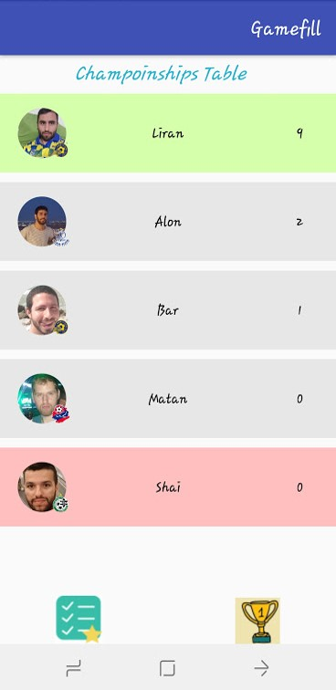
 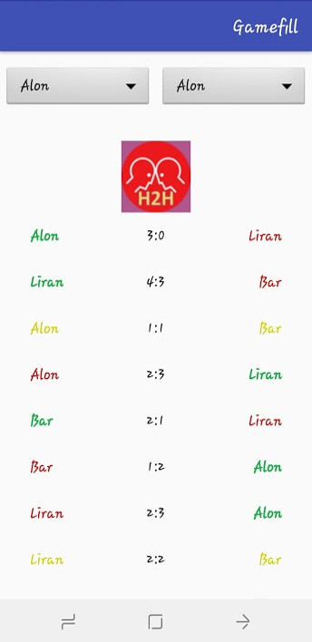
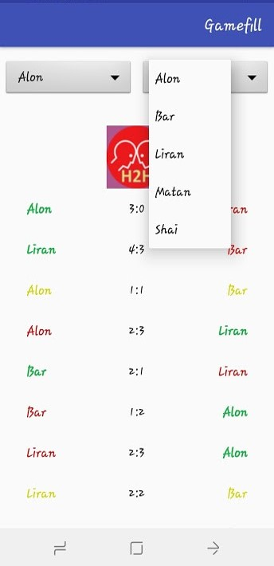
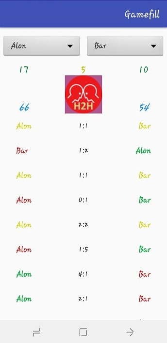
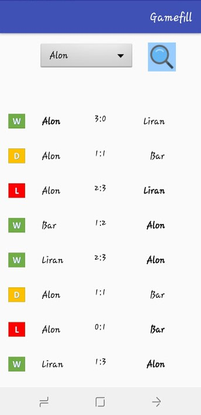
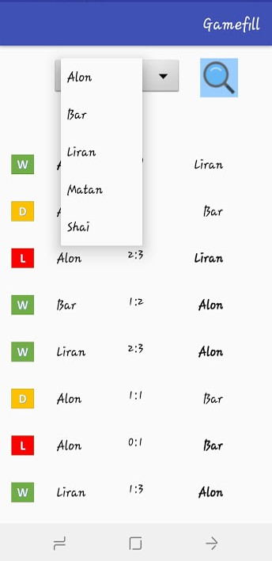
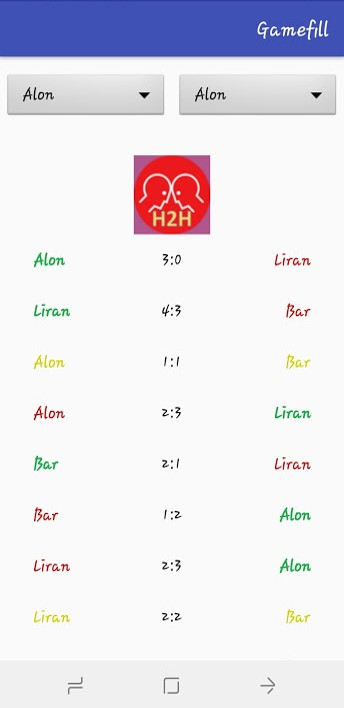
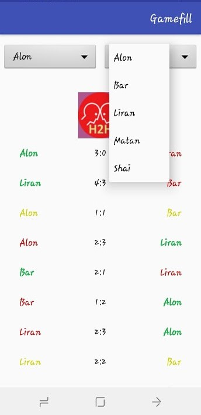
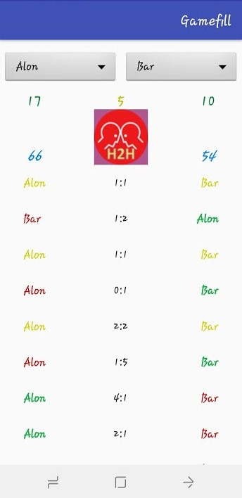
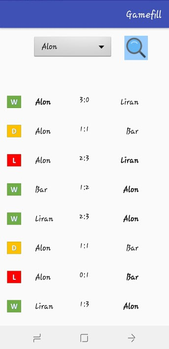
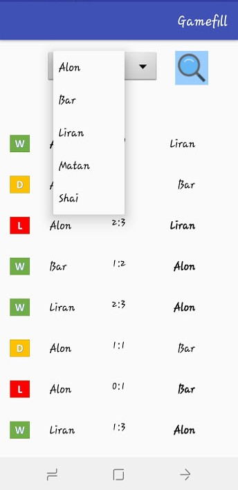